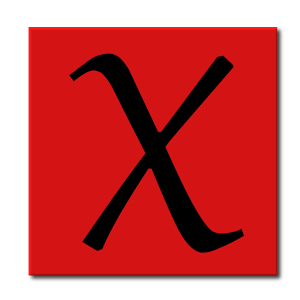

Chun-Ju
(CJ) Lai (賴俊儒)
I've joined the
Academia Sinica
as an Assistant Research Fellow since Sep 2020.
I was a limited term assistant professor at the
University of Georgia
;
a visiting postdoc fellow at the
Max Planck Institute for Mathematics
in Bonn, Germany.
My PhD advisor is
Weiqiang Wang
at the
University of Virginia.
My main research contribution is introducing the new notion of the quantum wreath products in a joint work with Nakano and Xiang.
A quantum wreath product, roughly speaking, is a uniform construction of algebras affording Bernstein-Lustztig presentations such as variants of the affine Hecke algebras,
as well as non-trivial deformations from wreath products of groups which are not necessarily Coxeter groups.
Historically, the study of these algebras has been challenging, often requiring a case-by-case analysis.
Our work on quantum wreath products introduces a unified framework that streamlines the study of their structure and representation theory,
suggesting connections to diagrammatic presentations from the perspective of monoidal categories, metaplectic covers of p-adic groups, and affine Khovanov-Lauda-Rouquier algebras.
My other research directions are active topics in modern representation theory, all connected but spanning a range of different related areas:
quantum symmetric pairs and quantum groups, highest weight categories, Lie superalgebras, modular representations for affine Lie algebras, algebraic combinatorics, and Springer theory.
I'm a Program Committee member of
Number Theory and Representation Theory, NCTS
.
From 2020-2026/06,I was an organizer of the colloquium at the Institute of Mathematics, Academia Sinica, the
Basic Notion Seminar at the National Taiwan University/Academia Sinica.
CV

Articles on arXiv
Google Scholar Citation page